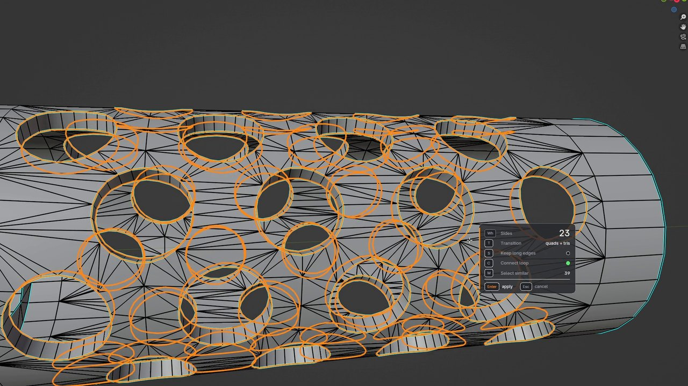
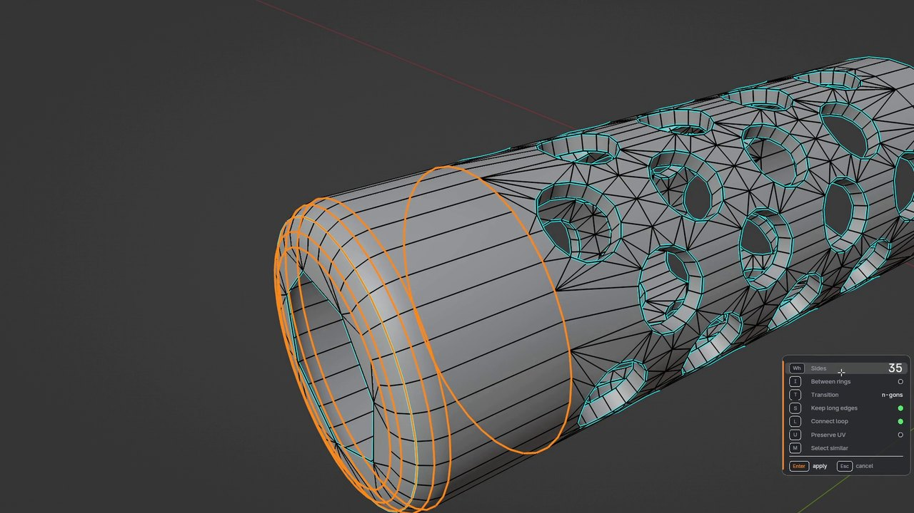
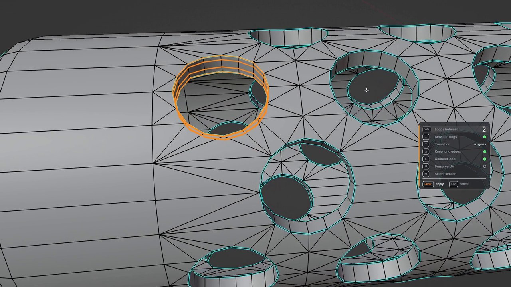
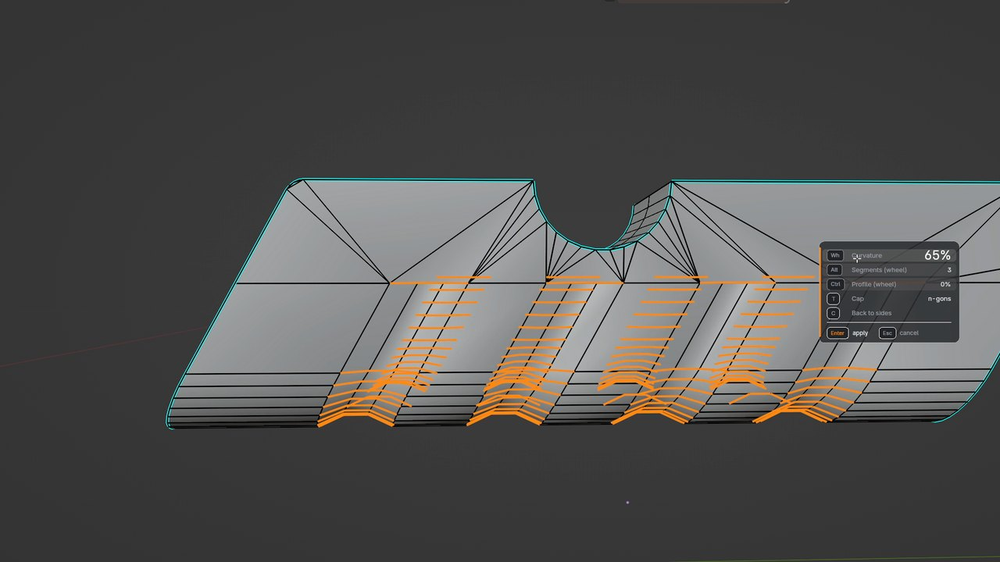
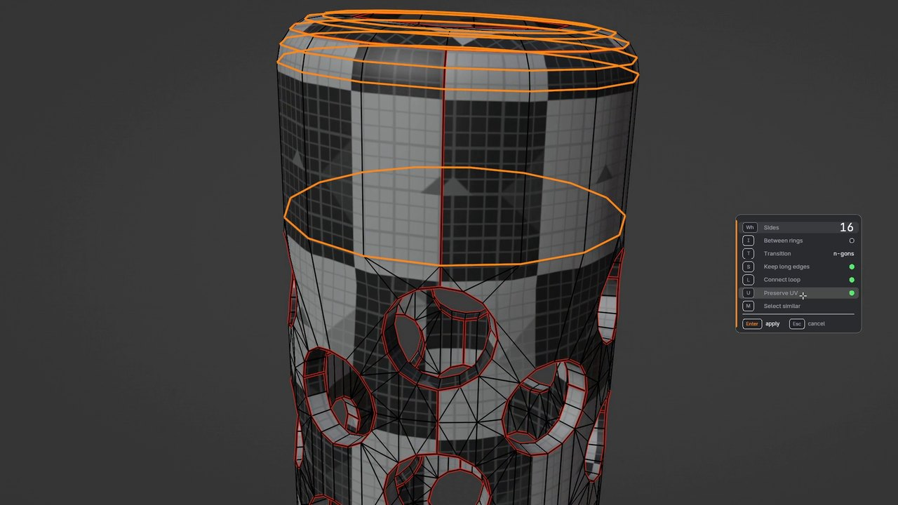
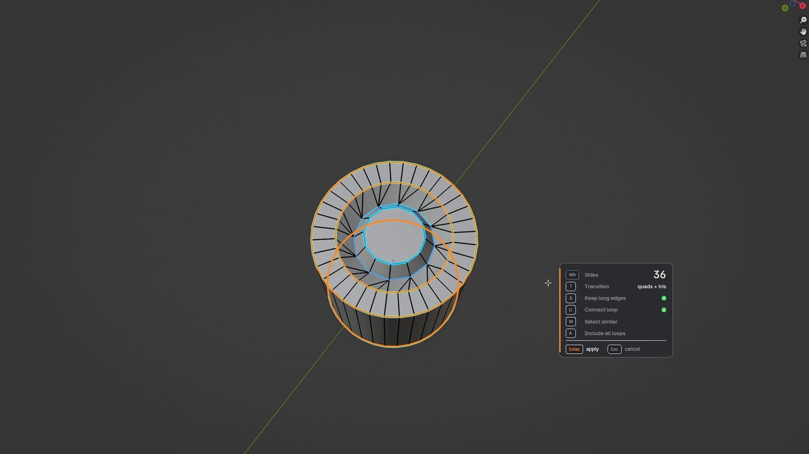
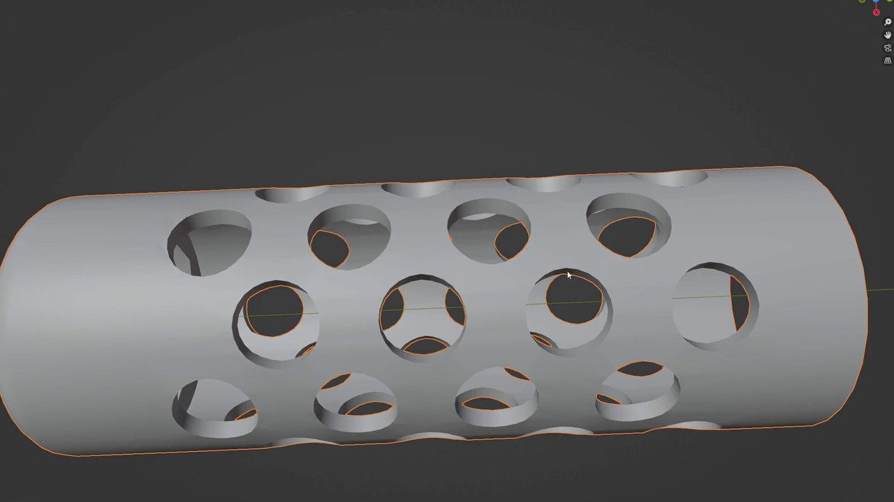
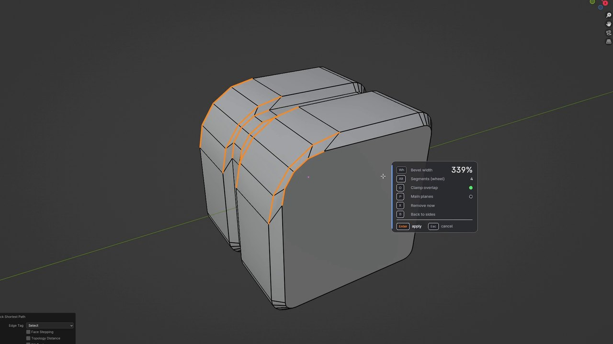
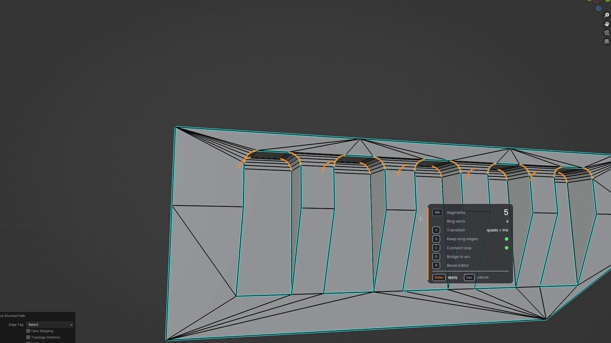

Меняйте число сегментов на любом кольце — вживую
Аддон для Blender: цилиндры, отверстия, скруглённые углы и фаски. Живое превью: поворот колеса мыши — и вся труба перестраивается. Версия 0.2: панель, Curvature, петли между и Preserve UV.
Как получить аддон Смотреть видео
Как это работает
Что умеет Resegment

0.2 Новая панель
Интерфейс теперь панель: перетащите её куда удобно, кликайте по строкам, чтобы переключать опции, и тяните число вбок, как колесо мыши.

0.2 Петли между
Нажмите I, и колесо добавляет петли вдоль трубы вместо изменения числа сторон. Нажмите M, и все похожие отверстия получат такие же петли сразу.

0.2 Curvature
Клавиша C изгибает дугу наружу или вдавливает её в поверхность, отрицательные значения прорезают канавку. Ctrl + колесо задаёт профиль, от мягкой кривой до идеальной окружности. Работает на многих полосах сразу.

0.2 Preserve UV
Клавиша U сохраняет текстуру и швы на месте, пока вы меняете число сторон. Работает и с отверстиями: шахматный узор не двигается.

Кольца и цилиндры
Выделите кольцо, запустите Resegment и крутите колесо: сторон становится больше или меньше, а вся труба следует за кольцом.

Много отверстий сразу
Выделите одно кольцо и нажмите M: все похожие отверстия присоединяются к выделению, и их можно менять вместе.

Редактор бевелов
Клавиша B: бевел можно сделать шире, уже или убрать совсем — с любым числом сегментов.

Снять фаски у всех углов
Выделите один угол, нажмите B, затем X: найдутся все такие же углы, и фаски превратятся в острые углы.
И ещё
Сохранение длинных прямых рёбер (S), переходы из n-угольников, четырёхугольников и треугольников (T). Все клавиши и запуск аддона настраиваются в Preferences.
Как получить аддон
Resegment получают те, кто поддержал проект. Я делюсь скриптами и аддонами, которыми пользуюсь в своей работе.
- Выберите способ: покупка на Gumroad за $4.99 (мгновенная загрузка), подписка на Boosty или разовый донат через DonationAlerts (от 300 ₽ ≈ 3,6 $ / 3,2 €).
- Gumroad: оплатите и сразу скачайте архив на странице покупки. Boosty: оформите подписку, ссылка на архив будет в закрытом посте, а подписка даёт доступ ко всем постам, которые будут выходить. DonationAlerts: в сообщении к донату укажите свою почту, я пришлю ссылку на неё.
- Скачайте файл Resegment.zip. Распаковывать его не нужно.
- В Blender: Edit → Preferences → Add-ons → Install from Disk… → выберите архив и включите галочку у Resegment.
- В режиме редактирования: меню Edge (Ctrl+E) → Resegment. Хоткей запуска можно назначить в настройках аддона.
Нужен Blender 4.4 или новее.
Донат через DonationAlerts: обязательно укажите свою почту в сообщении к донату, иначе мне некуда будет прислать ссылку.
Обратная связь
Баг, идея или вопрос — без аккаунта GitHub и без почты.